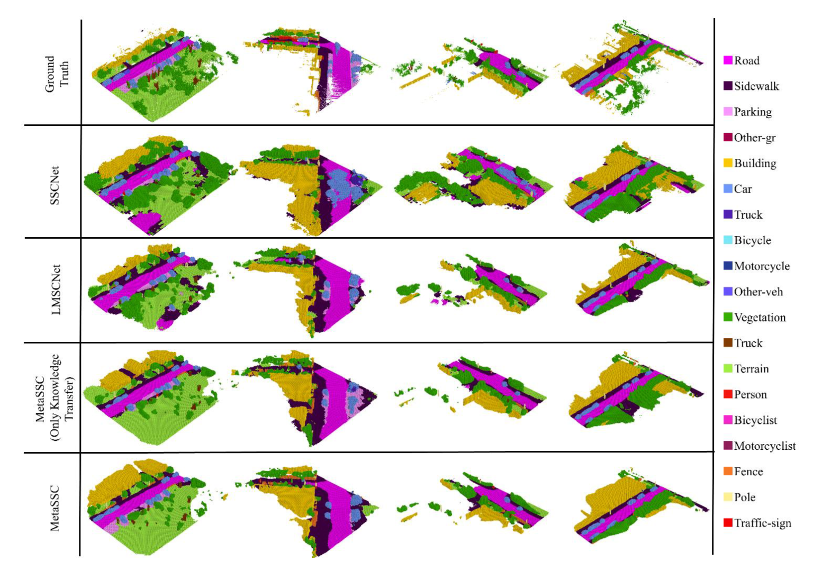
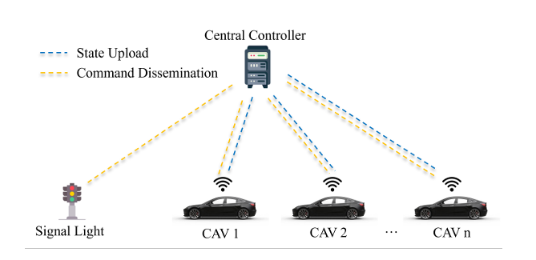
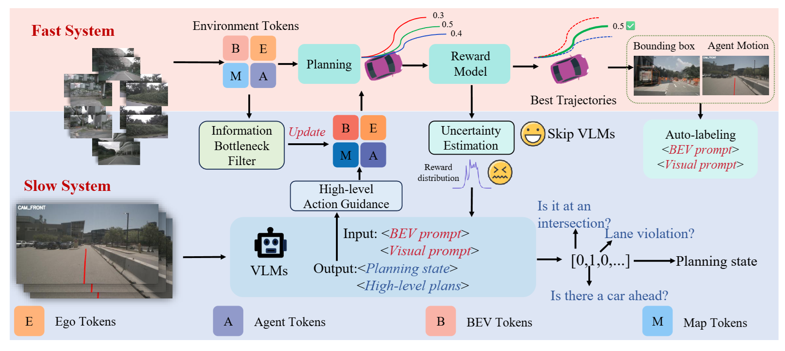
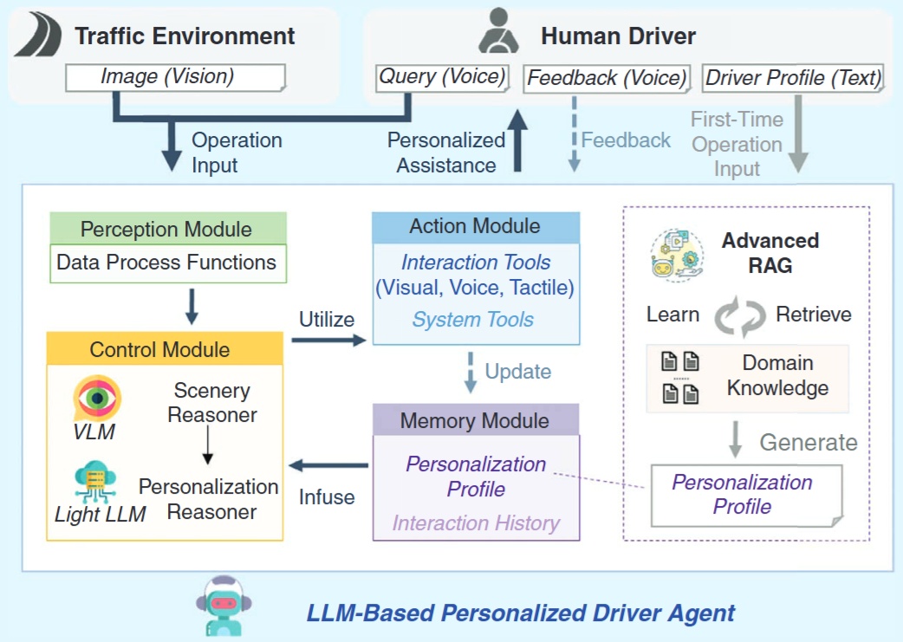
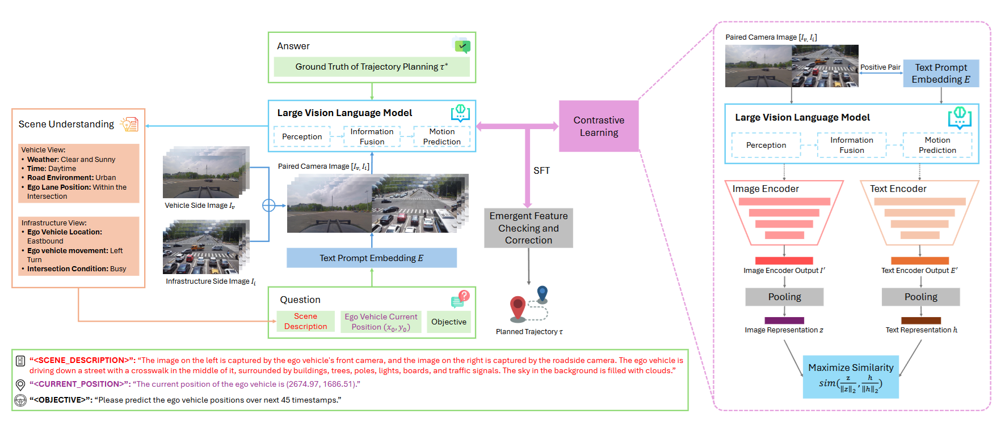
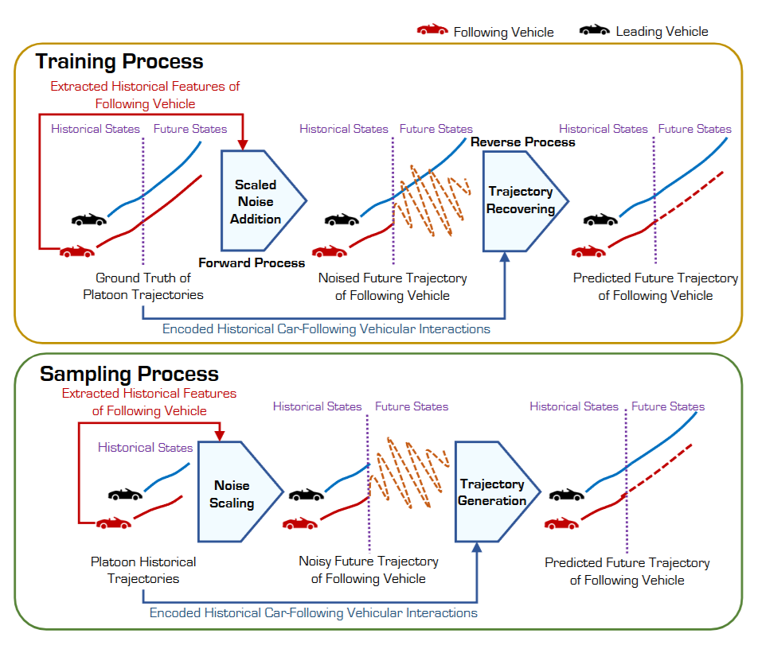
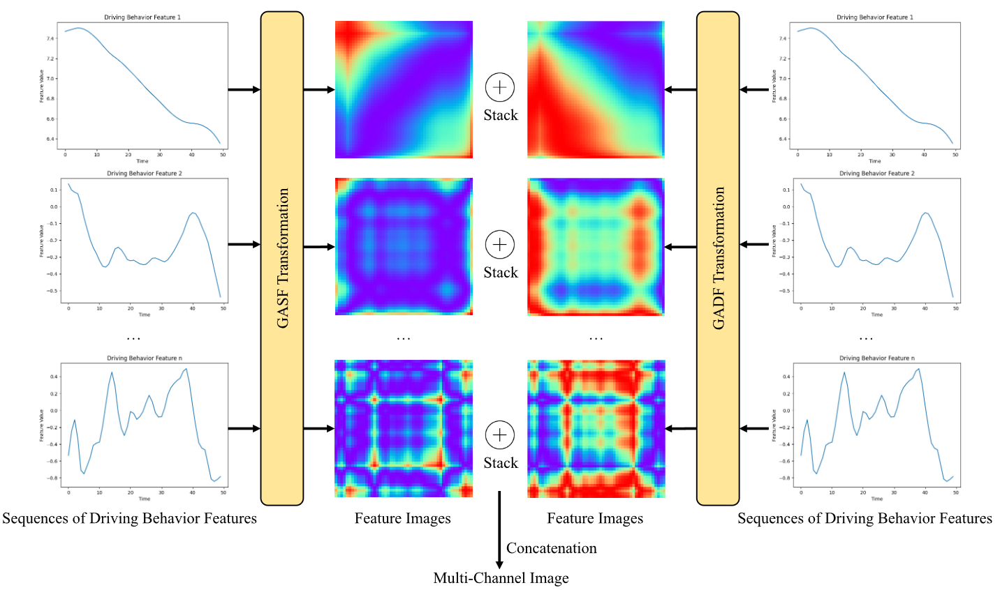
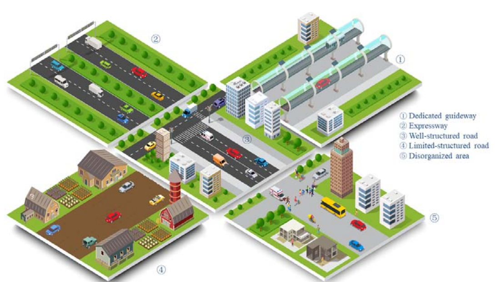
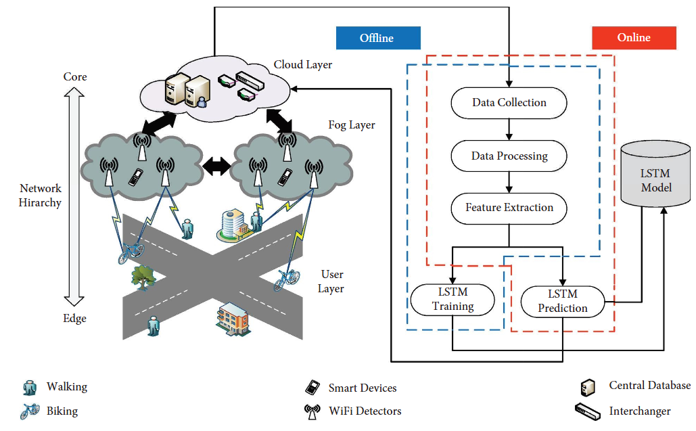
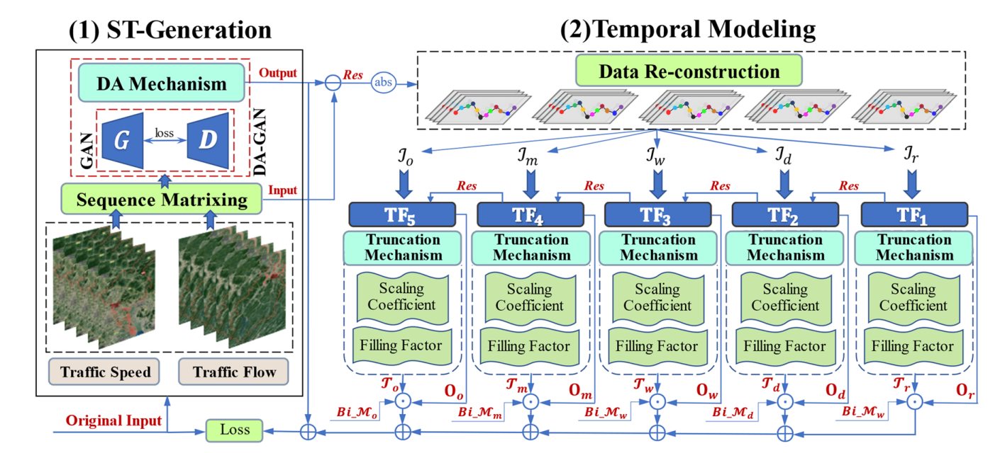

The list below may not be up to date, please check Google Scholar for my latest publications.
2025
- COMMTRMetaSSC: Enhancing 3D Semantic Scene Completion for Autonomous Driving through Meta-Learning and Long-sequence ModelingCommunications in Transportation Research (COMMTR) , 2025
- CACIEAn unstructured single-layer optimization approach for flexible right-of-way allocation and cooperative trajectory planning at signalized intersectionsComputer-Aided Civil and Infrastructure Engineering (CACIE) , 2025
- PreprintFASIONAD++: Integrating High-Level Instruction and Information Bottleneck in FAst-Slow fusION Systems for Enhanced Safety in Autonomous Driving with Adaptive FeedbackarXiv preprint arXiv:2503.08162 (Preprint) , 2025
- IEEE-ITSMPersonalizing Driver Agent Using Large Language Models for Driving Safety and Smarter Human-Machine InteractionsIEEE Intelligent Transportation Systems Magazine (IEEE-ITSM) , 2025


2024
- CACIE
 Ego-planning-guided multi-graph convolutional network for heterogeneous agent trajectory predictionComputer-Aided Civil and Infrastructure Engineering (CACIE) , 2024
Ego-planning-guided multi-graph convolutional network for heterogeneous agent trajectory predictionComputer-Aided Civil and Infrastructure Engineering (CACIE) , 2024 - JICV
 Kinematics-aware multigraph attention network with residual learning for heterogeneous trajectory predictionJournal of Intelligent and Connected Vehicles (JICV) , 2024
Kinematics-aware multigraph attention network with residual learning for heterogeneous trajectory predictionJournal of Intelligent and Connected Vehicles (JICV) , 2024 - PreprintV2X-VLM: End-to-End V2X Cooperative Autonomous Driving Through Large Vision-Language ModelsarXiv preprint arXiv:2408.09251 (Preprint) , 2024
- PreprintFollowGen: A Scaled Noise Conditional Diffusion Model for Car-Following Trajectory PredictionarXiv preprint arXiv:2411.16747 (Preprint) , 2024
- IEEE-TITSExploring Driving Behavior for Autonomous Vehicles Based on Gramian Angular Field Vision TransformerIEEE Transactions on Intelligent Transportation Systems (IEEE-TITS) , 2024


2023
- SustainabilityA taxonomy for autonomous vehicles considering ambient road infrastructureSustainability (Sustainability) , 2023
- JATWi-CL: Low-Cost WiFi-Based Detection System for Nonmotorized Traffic Travel Mode ClassificationJournal of Advanced Transportation (JAT) , 2023
- NCAADynamic adaptive generative adversarial networks with multi-view temporal factorizations for hybrid recovery of missing traffic dataNeural Computing and Applications (NCAA) , 2023